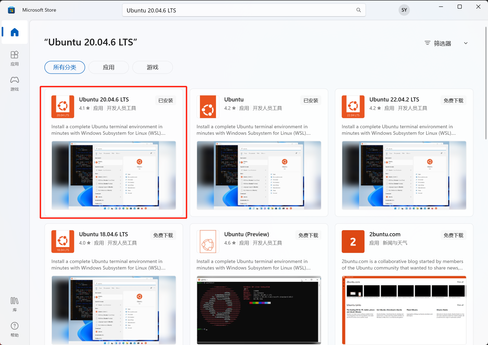

Chat#
This is the Chat project`s Github Link. You can clink here to view a sample application.
Introduction#
What is Chat?#
Chat Application is a web application that allows users to chat with AI.
Prerequisites#
Required Software#
WSL2#
You need to be running on Windows 10 version 2004 and higher (Build 19041 and higher) or Windows 11. Follow the instructions to install WSL2.
Recommendation: We recommend using the Microsoft Store for its seamless installation, automatic updates, and verified security.
→ To get the latest release of Ubuntu 20.04.6 LTS, simply search for it in the store.
{kind=link}
Not applicable. Skip this step.
Not applicable. Skip this step.
Docker#
Download and install Docker from the official website.
Download and install Docker from the official website.
Download and install Docker from the official website.
VS Code#
Download and install Visual Studio Code from the official website.
Download and install Visual Studio Code from the official website.
Download and install Visual Studio Code from the official website.
Git#
Download and install from Git for Windows.
Use the built-in Terminal and run git –version to see if Git is installed. If not, you’ll be prompted to install it.
Use your distribution’s package manager, e.g., sudo apt-get install git for Ubuntu/Debian.
Required Services#
GitHub#
Sign up for an account on the [GitHub website](https://github.com/). For detailed usage instructions, refer to the [official documentation](https://docs.github.com/en/github).
LLM#
OpenAI#
Visit the [OpenAI platform](https://platform.openai.com/signup) to sign up. Explore the [official documentation](https://beta.openai.com/docs/) for API usage and other details.
Vector database#
Pinecone#
[Sign up](URL_NEEDED) for a Pinecone account. Reference the official documentation [here](URL_NEEDED) for a detailed guide.
History database#
Xata#
(Note: URL and specific sign-up instructions needed. Link to official documentation if available.)
Auth & Subscription#
Wix#
Supporting frameworks#
Langchain#
Streamlit#
Visit Streamlit to understand its capabilities. Detailed usage and deployment instructions can be found in the official documentation.
Installation#
Tip
Before going any further, make sure your system meets all the Prerequisites.
Clone the Project#
Run Visual Studio Code and open the command palette.
Type and select
Git: Clone, then paste the GitHub repository URL (https://github.com/linancn/TianGong-AI-Chat.git).Choose a directory to save the project (such as
/home/uesr/projects/), and VS Code will automatically download (or “clone”) it for you.
Virtual Environment#
Create a virtual environment by running the following command in the terminal:
python3.11 -m venv .venv
Activate the virtual environment:
source venv/bin/activate
Install the required packages#
Upgrade pip
pip install --upgrade pip
Install packages
pip install -r requirements.txt
# If you encounter network connectivity issues, it's recommended to use the Tsinghua mirror or another suitable source.
pip install -r requirements.txt -i https://pypi.tuna.tsinghua.edu.cn/simple
Upgrade packages
pip install -r requirements.txt --upgrade
Configuration#
Customize the configuration by copying
.streamlit/secrets.dev.tomland renaming it to.streamlit/secrets.toml, then editing the required parameters as desired:
Parameter |
Description |
openai_api_key |
Your OpenAI API key |
pinecone_api_key |
Your Pinecone API key |
pinecone_environment |
Details about your Pinecone environment |
pinecone_index |
Information about your Pinecone index |
xata_api_key |
Your Xata API key |
xata_db_url |
The URL for your Xata database |
langchain_verbose |
Indicates if Langchain should be verbose (true/false). Default is true. |
llm_model |
The name of your LLM model. Default is gpt-4. |
password (optional) |
Your password. If needed, set “need_passwd” to True in tiangong-en.py at line 2. |
Tip
Replace every place that says Your* with the correct key or information.
openai_api_key = "YourKey"
pinecone_api_key = "YourKey"
pinecone_environment = "YourENV"
pinecone_index = "YourIndex"
xata_api_key = "YourKey"
xata_db_url = "YourURL"
langchain_verbose = true
llm_model = "YourModel"
password = "YourKey"
Customization#
Launch#
Launch the project by running the following command:
streamlit run ./src/AI.py
Or Using VsCode Debug Streamlit Configuration
Once executed, Streamlit will pop up a new browser window displaying your app. From this interface, you can interact with your project and also share it with others.
Deploy#
Upon run or launch the application, click on the “Deploy” button in the top right corner.

Click the “Deploy now” button

Sign up or log in to your Streamlit account

Deploy an app
Fill in the fields

Parameter |
Description |
Repository |
Select the repository you want to deploy. Default is the current repository. |
Branch |
Select the branch you want to deploy. Default is main. |
Main file path |
Set the path to the main Python script that runs your app. Keep the default settings. |
App URL (Optional) |
Set the URL where your app will be deployed. Default is https://share.streamlit.io/your-username/your-repo-name. |
You can change the URL to something more memorable, like aichat-example.streamlit.app.
Python version: Set Python version to 3.11.

Set Secrets: Under “Secrets”, paste the contents of
.streamlit/secrets.tomlinto the blue box and click “Save”.
Successfully deploy your first app!